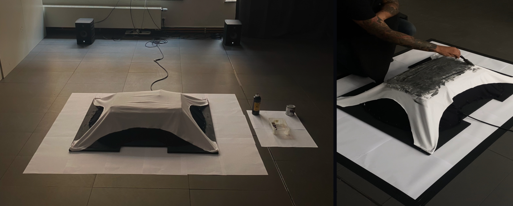

Veer Manghnani works in a multifaceted artistic practice. He uses audio, paintings, sketches, sculptures, fabric, typography, and digital illustrations in order to evoke a specific atmosphere that varies across each piece. Blending together storytelling and online marketing, Veer has amassed a sizable following on social media platforms for his work. Born in 2004 Dubai to an Indian family that was deeply involved in event production and stage design, he was always surrounded by creative influences, technology, and an overall industrial environment. Currently, his work attempts to blur the lines between conventional music and fine art, specifically through how the creation is presented and his usage of samples.
His work has been exhibited at events & spaces such as, “Mumbai AndarGround” Mumbai (2024), “Static Echo” c/o Prague City University, Prague (2024), “Back2Satellite” c/o Satellite - Al Serkal Avenue, Dubai (2022), “67% Tomato, 58% Society” c/o Prague City University, Prague (2022), “Mumbai to Mexico” c/o Artezaar - World Art Dubai, Dubai (2021).

VARA1
‘Vara1’ is a contact-reactive audio-visual installation. Sound is activated through brush strokes on the surface of the piece and gets fed into an audio workstation, which arpeggiates, pans, and echoes the signal, ad infinitum. "The structure of the piece is designed to mimic the Palki Sahib, a religious palanquin like object which contains the holy scripture of Sikhism and is housed in a Gurudvara, our place of worship". The act of prayer is also similar to how one might interact with the installation, by sitting in front of it and using a brush.
‘Log Kya Kahenge’ is a documentary-style art piece and installation. It depicts a large metal canopy with bent spoons suspended from the top using fishing wire, which the viewer is allowed and encouraged to walk through. In this project, Veer tackles themes of culture, masculinity, and educational institutions through his motif of bending spoons - which served as a superficial show of vigor in his all-Indian all-boys middle school. The artwork is accompanied by a video piece and audio, where Veer explains the story of the meaning of these spoons whilst bending all 217 that were used for the final piece. The full artwork is available on YouTube.